BPD Final Presentation
Supervisor: Dr U. Rajendra Acharya
Project Title
Arrhythmia
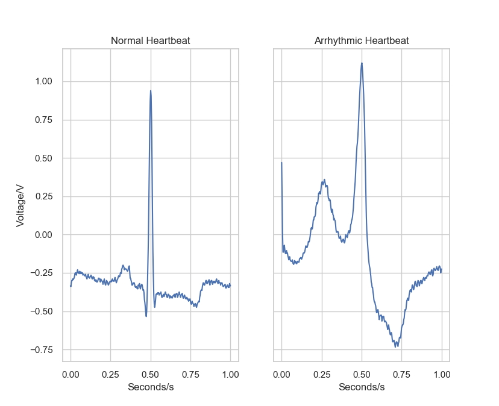Classifications
- Non-Ectopic (N)
- Supraventricular Ectopic (S)
- Ventricular Ectopic (V)
- Fusion (F)
- Unknown (Q)
Beat classification according to the Association for the Advancement of Medical Instrumentation (AAMI)
WHO Statistics
33.5 million people worldwide -- or .5% of the world's population -- have the condition [Atrial Fibrillation].
Classifications
- Non-Ectopic (N)
- Supraventricular Ectopic (S)
- Ventricular Ectopic (V)
- Fusion (F)
- Unknown (Q)
Beat classification according to the Association for the Advancement of Medical Instrumentation (AAMI)
WHO Statistics
33.5 million people worldwide -- or .5% of the world's population -- have the condition [Atrial Fibrillation].
Current Detection Methods
- Manual Detection
- Time Consuming
- Prone to Human Error
- Computer Aided Diagnosis
- Can process multiple batches of data simultaneously
- Requires much data to train accurately
Computer Aided Diagnosis
Machine Learning
- Detect Features
- Extract Features
- Model Compilation & Training
- Validation
 Taken from: https://machinelearningblogcom.files.wordpress.com/2017/11/bildschirmfoto-2017-11-09-um-16-36-191.png
Taken from: https://machinelearningblogcom.files.wordpress.com/2017/11/bildschirmfoto-2017-11-09-um-16-36-191.png
Deep Learning
 Taken from: https://cdn-images-1.medium.com/max/1600/1*dnvGC-PORSoCo7VXT3PV_A.png
Taken from: https://cdn-images-1.medium.com/max/1600/1*dnvGC-PORSoCo7VXT3PV_A.png
Deep Learning (Cont.)
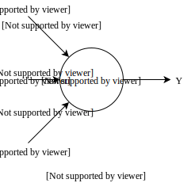Methodology
Data Used
Physionet MITDB Arrhythmia Database
Beat Classifications
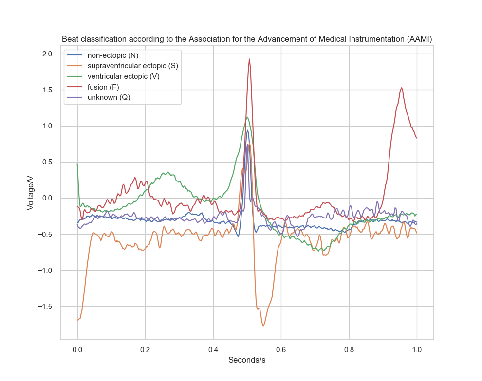Beat Classifications Count
| Beat Type | Beat Quantity |
|---|---|
| Non-Ectopic (N) | 90, 631 |
| Supraventricular Ectopic (S) | 2, 781 |
| Ventricular Ectopic (V) | 7, 256 |
| Fusion (F) | 803 |
| Unknown (Q) | 1, 015 |
Data Augmentation and Synthesis
 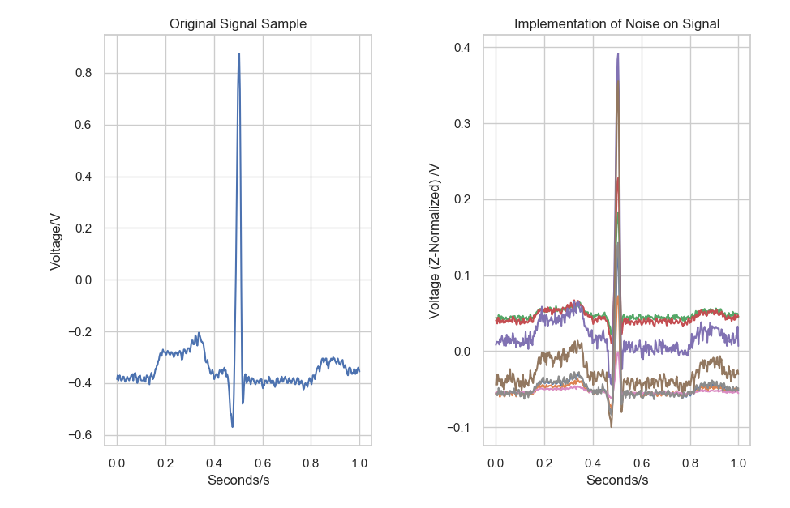
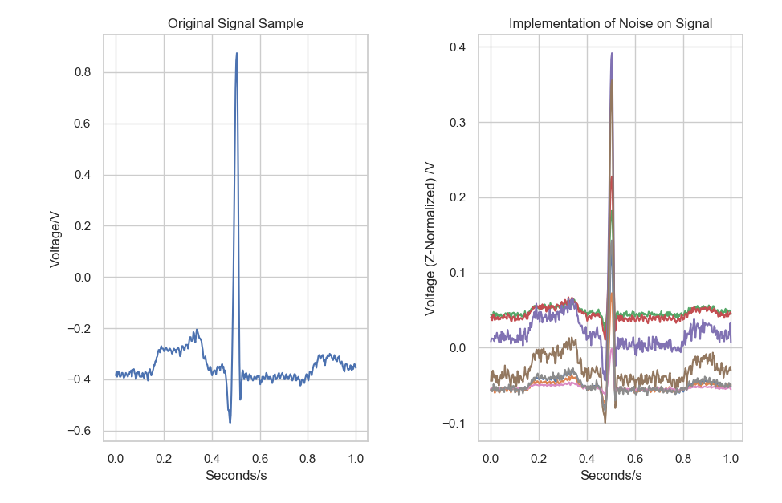
Convolutional Neural Network (CNN)

AlexNet CNN Architecture (Pedraza et al., 2017)
Definition
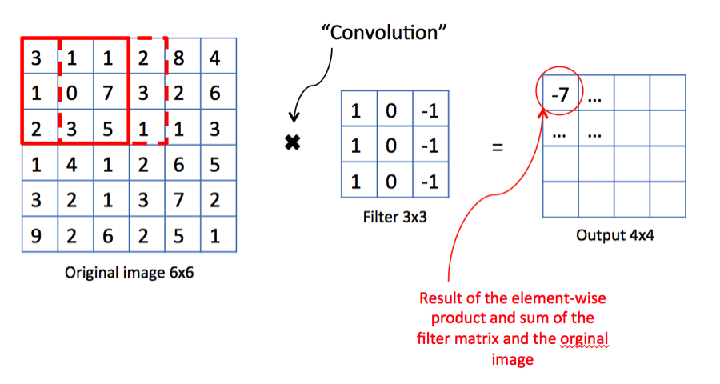 Taken from: https://cdn-images-1.medium.com/max/1600/1*7S266Kq-UCExS25iX_I_AQ.png{kind=link}
where \(*\) is the cross-correlation operator, \(N\) is the batch size, \(C\) denotes a number of channels, \(L\) is a length of signal sequence.
Temporal Convolutional Network (TCN)

Visualization of a stack of dilated causal convolutional layers (Wavenet, 2016)
Model Architecture
TCN Block
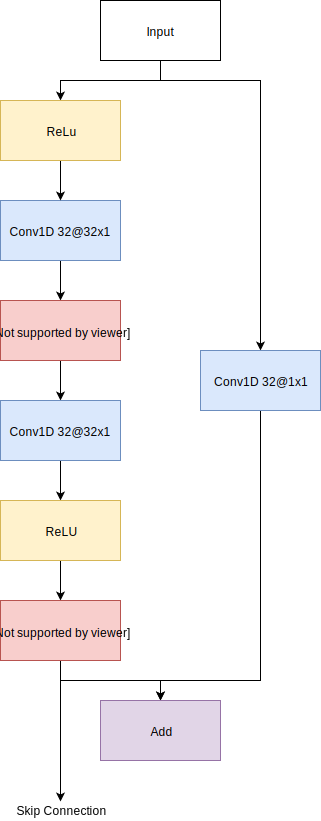Complete Architecture
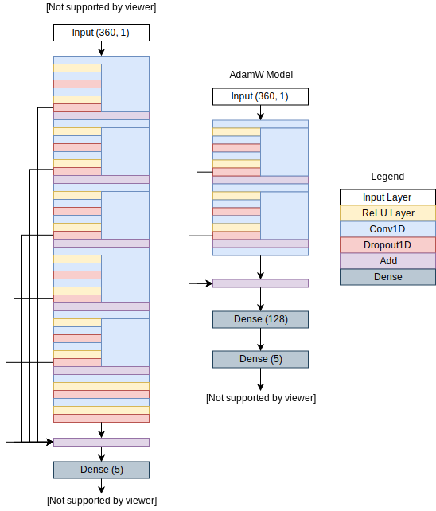Cyclic Learning Rates
Warm Restarts
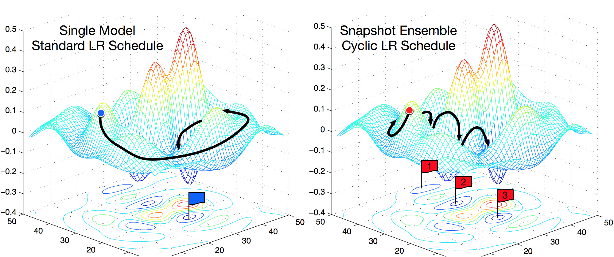 Taken from: https://cdn-images-1.medium.com/max/2000/1*T5WWecP_EaQWk1yDX15h_w.png{kind=link}
Cosine Annealing
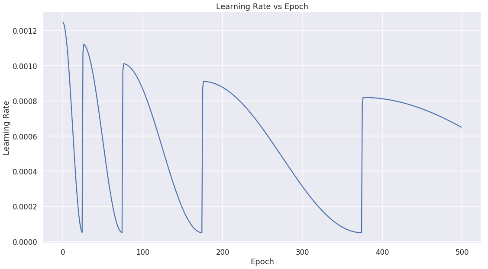1-Cycle Policy
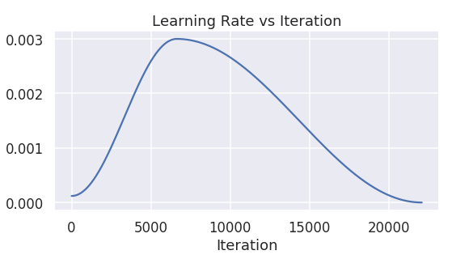Results
SGD-WR Model
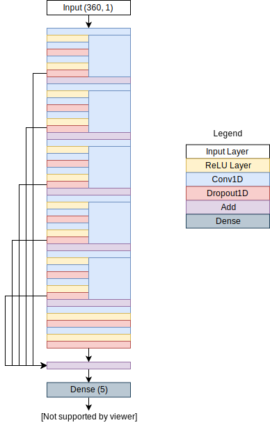Confusion Matrix
| Predicted | acc (%) | ppv (%) | sen (%) | spec (%) | ||||||
|---|---|---|---|---|---|---|---|---|---|---|
| N | V |
S | Q | F | ||||||
| Original | N | 20098 | 3018 | 12568 | 2746 | 6861 | 79.91 | 99.17 | 44.38 | 87.74 |
| V | 66 | 44644 | 142 | 40 | 399 | 99.36 | 93.50 | 98.57 | 99.59 | |
| S | 101 | 60 | 45106 | 22 | 2 | 99.82 | 78.02 | 99.59 | 99.88 | |
| Q | 0 | 0 | 0 | 45291 | 0 | 100.00 | 94.16 | 100.00 | 100.00 | |
| F | 1 | 26 | 0 | 0 | 45262 | 99.97 | 86.17 | 99.94 | 99.98 | |
| Average | 95.81 | 90.20 | 88.50 | 97.44 | ||||||
Metrics
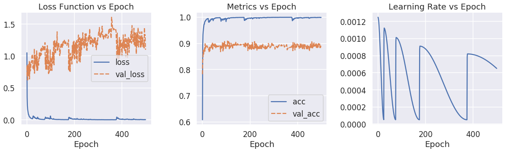1-Cycle AdamW Model
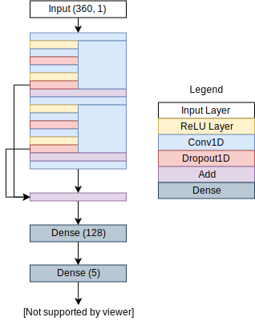Confusion Matrix
| Predicted | acc (%) | ppv (%) | sen (%) | spec (%) | ||||||
|---|---|---|---|---|---|---|---|---|---|---|
| N | V |
S | Q | F | ||||||
| Original | N | 23920 | 2742 | 11072 | 2892 | 4665 | 82.59 | 98.85 | 52.81 | 89.32 |
| V | 49 | 44230 | 224 | 103 | 685 | 98.96 | 91.15 | 97.66 | 99.34 | |
| S | 166 | 1190 | 44789 | 95 | 51 | 98.54 | 79.70 | 96.76 | 99.06 | |
| Q | 19 | 64 | 58 | 45063 | 87 | 99.78 | 93.28 | 99.50 | 99.86 | |
| F | 44 | 301 | 51 | 157 | 44738 | 99.46 | 89.07 | 98.78 | 99.65 | |
| Average | 95.87 | 90.41 | 89.10 | 97.44 | ||||||
Metrics
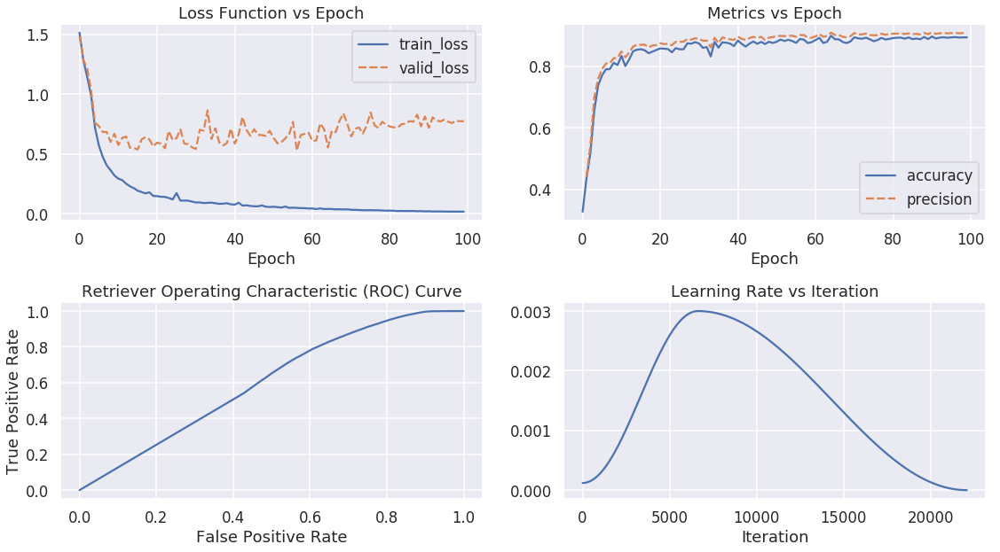References
- Pedraza, A., Gallego, J., Lopez, S., Gonzalez, L., Laurinavicius, A., & Bueno, G. (2017). Glomerulus Classification with Convolutional Neural Networks. In Communications in Computer and Information Science (pp. 839–849). Springer International Publishing. https://doi.org/10.1007/978-3-319-60964-5_73
- van den Oord, A., Dieleman, S., Zen, H., Simonyan, K., Vinyals, O., Graves, A., … Kavukcuoglu, K. (2016). WaveNet: A Generative Model for Raw Audio. Retrieved from http://arxiv.org/abs/1609.03499